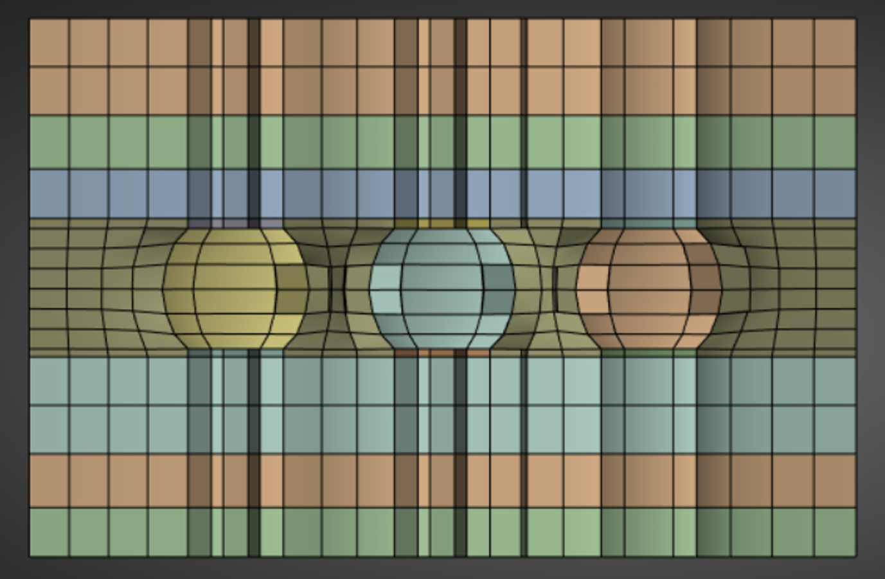

Note
Go to the end to download the full example code.
Mesh a set of solder balls (beta)#
Summary: This example demonstrates how to mesh a set of solder balls with mainly hexahedral elements. The solder is initially modelled as cylindrical to allow meshing using stacker and then local match morph controls are applied to recover the spherical shapes.
Note
This example contains a beta API. The behavior and implementation may change in future.
Objective#
This example uses locally defined match morphing controls to morph a hexahedral mesh, created using volume sweep, to many spherical solder balls.
{kind=link}
Procedure#
Import libraries necessary to run the script.
Launch an Ansys Prime Server instance.
Import stackable simplified CAD geometry with refaceting.
Connect the geometry using scaffolding.
Mesh with hex dominant elements using the volume sweeper.
Import the target CAD geometry for the solders for match morphing.
Locally match morph the simplified mesh to the target spherical solders.
Delete the target and export the morphed mesh.
Exit the PyPrimeMesh session.
Import modules#
Import libraries necessary to run the script.
import os
import tempfile
import ansys.meshing.prime as prime
from ansys.meshing.prime.graphics import PrimePlotter
Launch Ansys Prime Server#
Launch an instance of Ansys Prime Server. Connect the PyPrimeMesh client and get the model.
prime_client = prime.launch_prime()
model = prime_client.model
Using Ansys Prime Server from container ansys-prime-server-12
Import CAD geometry#
FMD is exported from SpaceClaim for the geometry. Geometry consists of multiple non overlapping and disconnected volumes. The model has multiple layers either side of several solder balls with pads and contains an infill volume around the solder. During import, the part creation type is set to BODY so that each body in the CAD is imported as a separate part. Refaceting is specified for more control of the scaffolding operation. Consistent faceting for the curved surfaces to be joined can be obtained by specifying CadRefacetingMaxEdgeSizeLimit as ABSOLUTE. To avoid over refinement of the faceting the max_edge_size is allowed to reach a size of 1.0. Labels can be assigned to manage the entities of each volume.
solder_ball = prime.examples.download_solder_ball_fmd()
params = prime.ImportCadParams(
model,
append=True,
part_creation_type=prime.PartCreationType.BODY,
refacet=True,
cad_refaceting_params=prime.CadRefacetingParams(
model,
cad_faceter=prime.CadFaceter.PARASOLID,
max_edge_size_limit=prime.CadRefacetingMaxEdgeSizeLimit.ABSOLUTE,
max_edge_size=1.0,
),
)
prime.FileIO(model).import_cad(file_name=solder_ball, params=params)
for part in model.parts:
part.add_labels_on_topo_entities([part.name], part.get_topo_faces())
part.add_labels_on_topo_entities([part.name], part.get_topo_volumes())
# Display the model without the infill so the cylindrical geometry of the solder
# is visible.
display = PrimePlotter()
display.plot(
model, scope=prime.ScopeDefinition(model=model, label_expression="solder_cyl*,pad*,layer*")
)
display.show()
Connect geometry#
Merge all parts into a single part so they can be connected. Imprint adjacent topo faces by connecting topo faces and topo edges. Mesh all topo faces to allow splitting the imprinted topo faces by mesh regions. Delete mesh on topo faces after splitting. Merge newly created overlapping topo faces so only a single topo face exists between connected volumes.
part_ids = [part.id for part in model.parts if part.get_topo_faces()]
merge_result = model.merge_parts(part_ids=part_ids, params=prime.MergePartsParams(model))
print(model)
merged_part = model.get_part(merge_result.merged_part_id)
params = prime.ScaffolderParams(
model=model,
absolute_dist_tol=0.01,
intersection_control_mask=prime.IntersectionMask.FACEFACEANDEDGEEDGE,
constant_mesh_size=0.1,
)
scaffolder = prime.Scaffolder(model, merged_part.id)
res = scaffolder.scaffold_topo_faces_and_beams(
topo_faces=merged_part.get_topo_faces(), topo_beams=[], params=params
)
prime.lucid.Mesh(model).surface_mesh(min_size=0.1)
prime.Scaffolder(model, merged_part.id).split_topo_faces_by_mesh_region(
merged_part.get_topo_faces()
)
# This is a beta API. The behavior and implementation may change in future.
result = model.topo_data.delete_mesh_on_topo_faces(
merged_part.get_topo_faces(), prime.DeleteMeshParams(model=model)
)
scaffolder.merge_overlapping_topo_faces(merged_part.get_topo_faces(), params)
display = PrimePlotter()
display.plot(model, update=True)
display.show()
Part Summary:
Part Name: infill
Part ID: 9
156 Topo Edges
132 Topo Faces
34 Topo Volumes
0 Edge Zones
Edge Zone Name(s) : []
0 Face Zones
Face Zone Name(s) : []
34 Volume Zones
Volume Zone Name(s) : [infill, layer, pad, pad.1, pad.2, pad.3, pad.4, pad.5, pad.6, pad.7, pad.8, pad.9, pad.10, pad.11, pad.12, pad.13, pad.14, pad.15, pad.16, pad.17, layer.1, solder, solder.1, solder.2, solder.3, solder.4, solder.5, solder.6, solder.7, solder.8, layer.2, layer.3, layer.4, layer.5]
35 Label(s)
Names: [infill, layer.1, layer.2, layer.3, layer.4, layer.5, layer.6, pad.1, pad.10, pad.11, pad.12, pad.13, pad.14, pad.15, pad.16, pad.17, pad.18, pad.2, pad.3, pad.4, pad.5, pad.6, pad.7, pad.8, pad.9, solder.1, solder.2, solder.3, solder.4, solder.5, solder.6, solder.7, solder.8, solder.9, solder_cyl]
Bounding box (0 0.67 0)
(4.00353 3.28 4.00353)
This delete_mesh_on_topo_faces is a beta API. The behavior and implementation may change in future.
Volume sweeper#
Setup a size control to refine the mesh around the solder. Setup stacker parameters to define the volume sweep mesh. Create the base face to quad surface mesh and use for sweeping. Stack the base face to create the volume mesh. Delete topology on mesh part to allow use of surface utilities and feature extraction. A large lateral defeature tolerance of 0.1 is used to avoid additional topo nodes from scaffolding impacting the final mesh.
model.set_global_sizing_params(prime.GlobalSizingParams(model, min=0.1, max=0.4))
size_control = model.control_data.create_size_control(prime.SizingType.SOFT)
size_control.set_scope(
prime.ScopeDefinition(model, part_expression=merged_part.name, label_expression="*solder*")
)
size_control.set_soft_sizing_params(prime.SoftSizingParams(model, max=0.1))
stacker_params = prime.MeshStackerParams(
model=model,
direction=[0, 1, 0],
max_offset_size=0.4,
delete_base=True,
lateral_defeature_tolerance=0.1,
stacking_defeature_tolerance=0.01,
size_control_ids=[size_control.id],
)
sweeper = prime.VolumeSweeper(model)
createbase_results = sweeper.create_base_face(
part_id=merged_part.id,
topo_volume_ids=merged_part.get_topo_volumes(),
params=stacker_params,
)
base_faces = createbase_results.base_face_ids
merged_part.add_labels_on_topo_entities(["base_faces"], base_faces)
scope = prime.ScopeDefinition(model=model, label_expression="base_faces")
base_scope = prime.lucid.SurfaceScope(
entity_expression="base_faces",
part_expression=merged_part.name,
scope_evaluation_type=prime.ScopeEvaluationType.LABELS,
)
prime.lucid.Mesh(model).surface_mesh(
min_size=0.1, max_size=0.4, scope=base_scope, generate_quads=True
)
display = PrimePlotter()
display.plot(model, update=True)
display.show()
stackbase_results = sweeper.stack_base_face(
part_id=merged_part.id,
base_face_ids=base_faces,
topo_volume_ids=merged_part.get_topo_volumes(),
params=stacker_params,
)
merged_part.delete_topo_entities(
prime.DeleteTopoEntitiesParams(model, delete_geom_zonelets=True, delete_mesh_zonelets=False)
)
merged_part._print_mesh = True
print(merged_part)
display = PrimePlotter()
display.plot(model, update=True)
display.show()
Part Name: infill
Part ID: 9
132 Edge Zonelets
99 Face Zonelets
34 Cell Zonelets
0 Edge Zones
Edge Zone Name(s) : []
0 Face Zones
Face Zone Name(s) : []
34 Volume Zones
Volume Zone Name(s) : [infill, layer, pad, pad.1, pad.2, pad.3, pad.4, pad.5, pad.6, pad.7, pad.8, pad.9, pad.10, pad.11, pad.12, pad.13, pad.14, pad.15, pad.16, pad.17, layer.1, solder, solder.1, solder.2, solder.3, solder.4, solder.5, solder.6, solder.7, solder.8, layer.2, layer.3, layer.4, layer.5]
35 Label(s)
Names: [infill, layer.1, layer.2, layer.3, layer.4, layer.5, layer.6, pad.1, pad.10, pad.11, pad.12, pad.13, pad.14, pad.15, pad.16, pad.17, pad.18, pad.2, pad.3, pad.4, pad.5, pad.6, pad.7, pad.8, pad.9, solder.1, solder.2, solder.3, solder.4, solder.5, solder.6, solder.7, solder.8, solder.9, solder_cyl]
Bounding box (0 0.67 -5.53009e-17)
(4.00353 3.28 4.00353)
Mesh Summary:
18187 Nodes
0 Poly Faces
10638 Quad Faces
688 Tri Faces
11326 Faces
0 Poly Cells
14154 Hex Cells
1204 Prism Cells
0 Pyramid Cells
0 Tet Cells
15358 Cells
Import sphere geometry for match morphing#
Create a single part on CAD import by setting the part creation type to MODEL. Convert topology to mesh face zonelets to use surface utilities.
solder_ball_target = prime.examples.download_solder_ball_target_fmd()
params = prime.ImportCadParams(model, append=True, part_creation_type=prime.PartCreationType.MODEL)
prime.FileIO(model).import_cad(file_name=solder_ball_target, params=params)
imported_cad_part_ids = [part.id for part in model.parts if part.get_topo_faces()]
target_part = model.get_part(imported_cad_part_ids[0])
display = PrimePlotter()
display.plot(model, scope=prime.ScopeDefinition(model, part_expression=target_part.name))
display.show()
print(model)
target_part.delete_topo_entities(
prime.DeleteTopoEntitiesParams(model, delete_geom_zonelets=False, delete_mesh_zonelets=False)
)
Part Summary:
Part Name: infill
Part ID: 9
132 Edge Zonelets
99 Face Zonelets
34 Cell Zonelets
0 Edge Zones
Edge Zone Name(s) : []
0 Face Zones
Face Zone Name(s) : []
34 Volume Zones
Volume Zone Name(s) : [infill, layer, pad, pad.1, pad.2, pad.3, pad.4, pad.5, pad.6, pad.7, pad.8, pad.9, pad.10, pad.11, pad.12, pad.13, pad.14, pad.15, pad.16, pad.17, layer.1, solder, solder.1, solder.2, solder.3, solder.4, solder.5, solder.6, solder.7, solder.8, layer.2, layer.3, layer.4, layer.5]
35 Label(s)
Names: [infill, layer.1, layer.2, layer.3, layer.4, layer.5, layer.6, pad.1, pad.10, pad.11, pad.12, pad.13, pad.14, pad.15, pad.16, pad.17, pad.18, pad.2, pad.3, pad.4, pad.5, pad.6, pad.7, pad.8, pad.9, solder.1, solder.2, solder.3, solder.4, solder.5, solder.6, solder.7, solder.8, solder.9, solder_cyl]
Bounding box (0 0.67 -5.53009e-17)
(4.00353 3.28 4.00353)
Part Name: solder_ball_generic-small
Part ID: 2
18 Topo Edges
9 Topo Faces
0 Topo Volumes
0 Edge Zones
Edge Zone Name(s) : []
9 Face Zones
Face Zone Name(s) : [surface.1, surface.2, surface.3, surface.4, surface.5, surface.6, surface.7, surface.8, surface.9]
0 Volume Zones
Volume Zone Name(s) : []
1 Label(s)
Names: [solder_sph]
Bounding box (0.615874 1.67823 0.615776)
(3.38422 2.26177 3.38422)
<ansys.meshing.prime.autogen.partstructs.DeleteTopoEntitiesResults object at 0x7f46582f71f0>
Match morph the mesh to the spherical solder#
Delete feature edge zonelets on the mesh source. Get lists of the source and target face zonelets for the match morph. Pair source and target faces based on overlapping bounding box locations. For each source face extract feature edges with nodes attached to faces. Define edge pairs for each match pair control as a morph boundary condition. Match morph solder faces and edges. Delete target sphere part and retain the morphed mesh for export.
merged_part.delete_zonelets(merged_part.get_edge_zonelets())
cylinder_faces = merged_part.get_face_zonelets_of_label_name_pattern(
"solder_cyl", prime.NamePatternParams(model)
)
sphere_faces = target_part.get_face_zonelets()
match_pairs = []
# When the match morph operation is defined by multiple
# separate local match morph source and targets,
# individual match pairs must be specified for each
# contiguous set of face zonelets.
# Separate one to one boundary condition pairs for the
# connected edge zonelets must also be defined for
# each face match pair to ensure the edges remain rigid.
# For each solder to be morphed we have a match pair
# for the source and target face zonelets. To ensure
# the edge zonelets remain rigid during the morph,
# boundary condition pairs for each of the two edge
# zonelets need to be created.
# For each cylindrical face zonelet on the source
# mesh find the corresponding target sphere face zonelet
# to match morph the mesh using the position of their bounding box.
# Labels defined in the CAD model would be a more efficient way to pair.
tolerance = 0.2
for face in cylinder_faces:
box = prime.SurfaceUtilities(model).get_bounding_box_of_zonelets([face])
for i in range(len(sphere_faces)):
sphere_box = prime.SurfaceUtilities(model).get_bounding_box_of_zonelets([sphere_faces[i]])
if (
(abs(sphere_box.xmin - box.xmin) < tolerance)
and (abs(sphere_box.ymin - box.ymin) < tolerance)
and (abs(sphere_box.zmin - box.zmin) < tolerance)
and (abs(sphere_box.xmax - box.xmax) < tolerance)
and (abs(sphere_box.ymax - box.ymax) < tolerance)
and (abs(sphere_box.zmax - box.zmax) < tolerance)
):
break
elif i == len(sphere_faces) - 1:
# if no target face is found by the final pass then return an error
prime.PrimeRuntimeError(message=f"Target sphere not found for face {face}.")
match_pair = prime.MatchPair(
model,
source_surfaces=[face],
target_surfaces=[sphere_faces[i]],
target_type=prime.MatchPairTargetType.FACEZONELET,
)
bc_pairs = []
# Once each source and target face zonelet are found and paired, edge zonelets
# are created and used as boundary conditions to ensure they remain rigid.
# Creating edge zonelets not disconnected from the faces ensures that the edge
# zonelet will act as a boundary condition for the morph operation.
# Extracting the edge zonelets from the source face zonelet and using
# them to define both source and target boundary conditions ensures
# the edge zonelets of the solder remain rigid.
result = prime.FeatureExtraction(model).extract_features_on_face_zonelets(
merged_part.id,
[face],
prime.ExtractFeatureParams(
model,
feature_angle=60,
separate_features=True,
separation_angle=60,
replace=False,
disconnect_with_faces=False,
),
)
for edge in result.new_edge_zonelets:
bc_pair = prime.BCPair(
model,
int(edge),
int(edge),
type=prime.BCPairType.EDGE,
)
bc_pairs.append(bc_pair)
match_pair.bc_pairs = bc_pairs
match_pairs.append(match_pair)
morph = prime.Morpher(model)
morph_params = prime.MatchMorphParams(model)
bc_params = prime.MorphBCParams(model, morphable_layers=0)
solve_params = prime.MorphSolveParams(model)
morph.match_morph(
part_id=merged_part.id,
match_pairs=match_pairs,
match_morph_params=morph_params,
bc_params=bc_params,
solve_params=solve_params,
)
model.delete_parts([target_part.id])
display = PrimePlotter()
display.plot(
model, scope=prime.ScopeDefinition(model=model, label_expression="solder*"), update=True
)
display.show()
Export mesh#
Export a CDB file.
with tempfile.TemporaryDirectory() as temp_folder:
mesh_file = os.path.join(temp_folder, "solder_balls.cdb")
params = prime.ExportMapdlCdbParams(model=model)
prime.FileIO(model=model).export_mapdl_cdb(file_name=mesh_file, params=params)
assert os.path.exists(mesh_file)
print("\nExported file:\n", mesh_file)
This get_abaqus_simulation_data is a beta API. The behavior and implementation may change in future.
Exported file:
/tmp/tmpzlh6f17s/solder_balls.cdb
Exit PyPrimeMesh#
prime_client.exit()
Total running time of the script: (3 minutes 46.189 seconds)